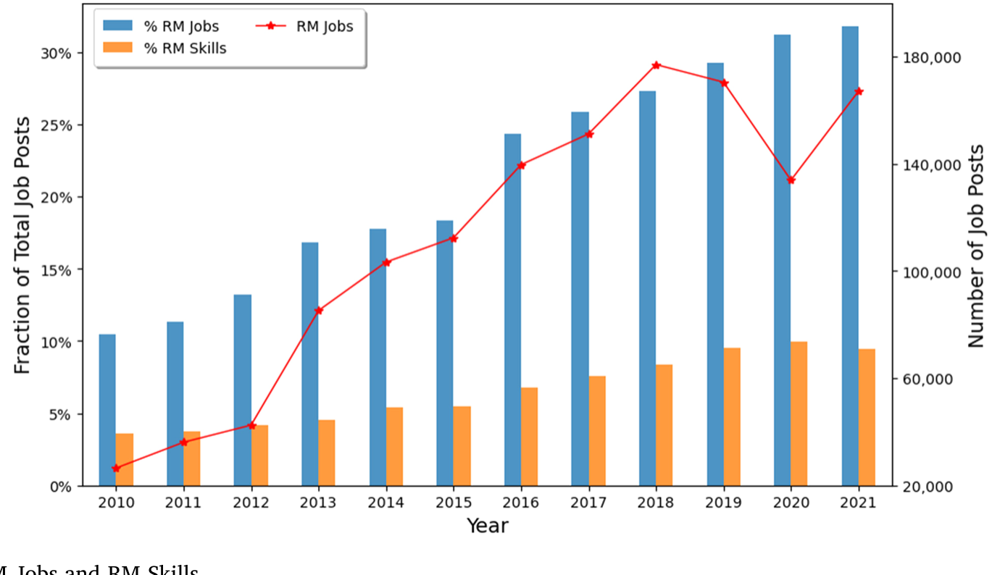
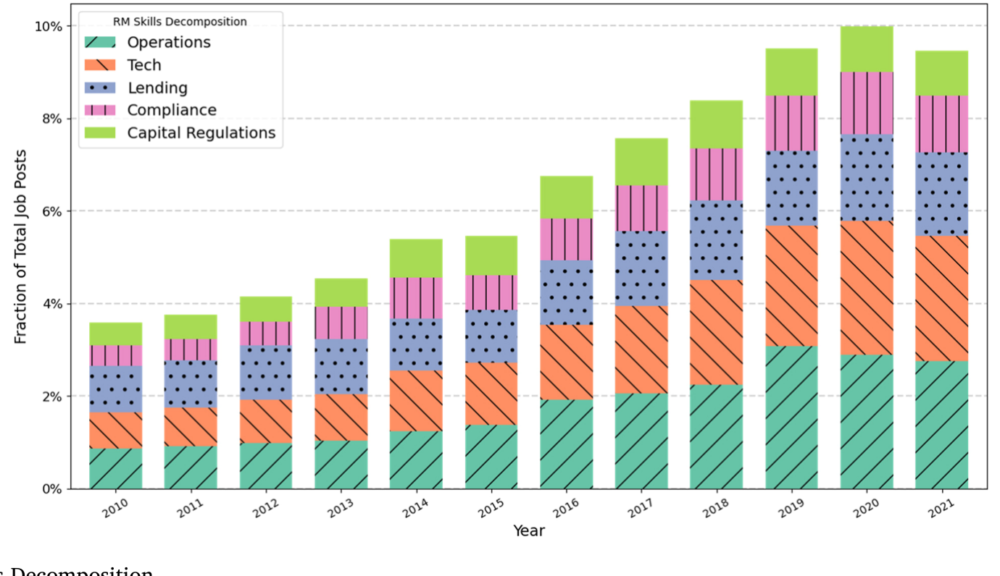
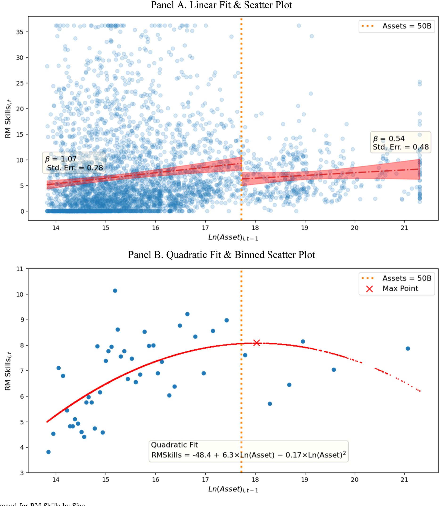
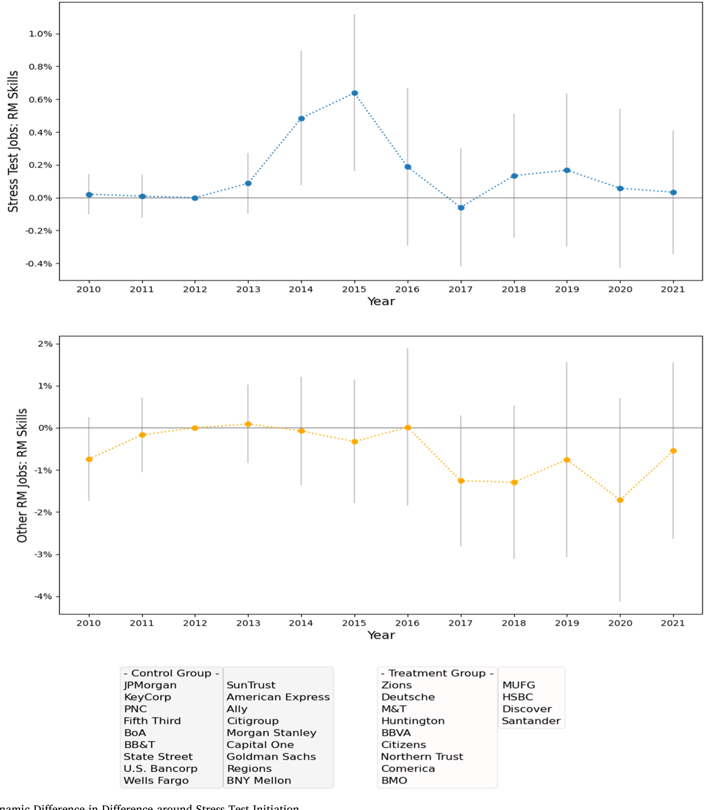
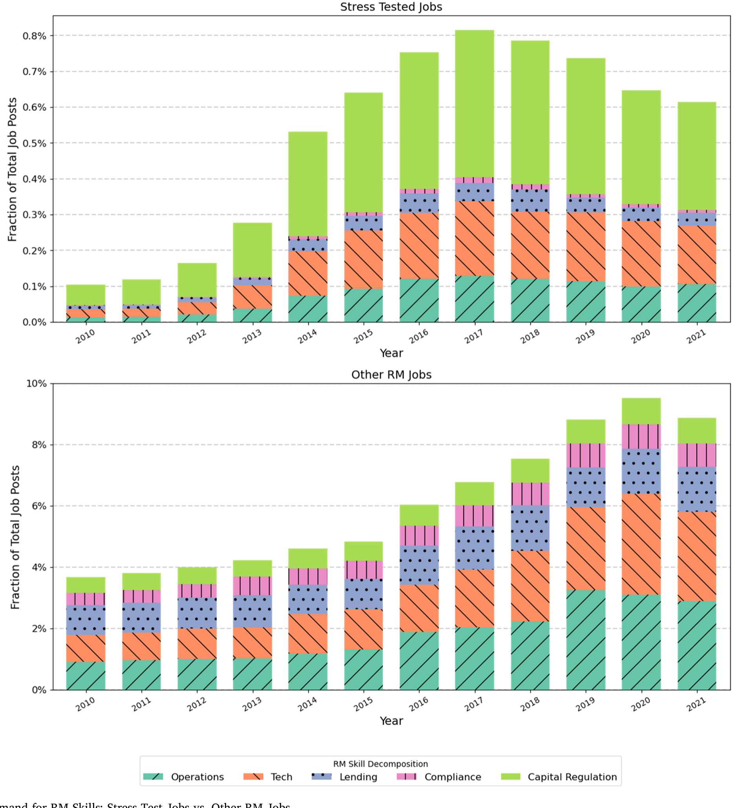
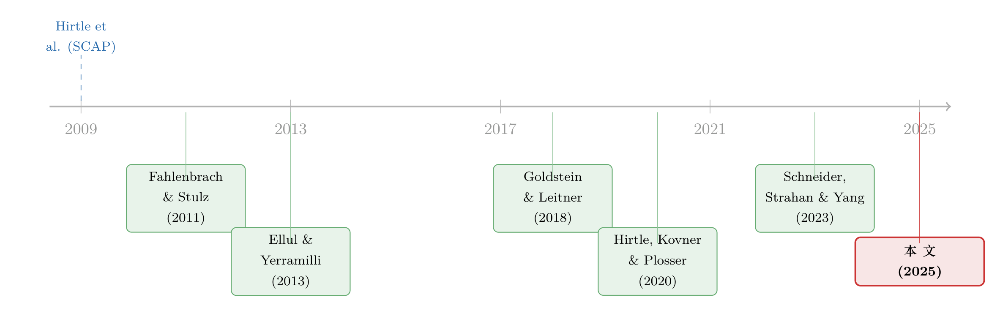

银行招谁来管风险：压力测试买来的，是「真本事」还是「过考试」？
本文读的是 Schneider, Strahan & Yang (2025, JFE)：作者用 Lightcast 的海量招聘广告，直接「看」银行想雇什么样的人来管风险。结论有点扎心——大银行（"大到不能倒"）比小银行更不愿意投资风险管理人才；压力测试确实把这部分需求往上拉了一点，但拉动的几乎全是「为通过考试而生」的那一小撮岗位，对占了九成以上的其余风险管理岗位，几乎没有外溢。
1 引言：风险管理是银行的「核心业务」，可我们几乎不知道银行在为它雇谁
一家银行到底是干什么的？教科书会告诉你：承担风险、管理风险，这是银行创造价值的核心。可吊诡的是，关于银行「如何管理风险」这件事，学界研究来研究去，盯着的几乎都是塔尖上的那几个人——CEO 的薪酬激励 (Fahlenbrach and Stulz, 2011)、董事会里有没有金融专家 (Ellul and Yerramilli, 2013; Minton et al., 2014)、再不然就是抽象的「风险文化」(Fahlenbrach et al., 2012)。
这当然都重要。高管和董事会定下基调、设好激励，是风险管理的「司令部」。但司令部发了号令，总得有人去执行吧？真正趴在数据上跑模型、搭压力测试框架、盯着合规红线的，是大量的中低层员工。这些人是谁？银行愿不愿意花钱雇他们？——这恰恰是一片空白。
本文的巧思，就在于换了一个观察的窗口：与其去问银行「实际雇了谁」（那既受供给又受需求影响，数据也不存在），不如去看银行「想雇谁」。招聘广告，正是银行「显示性偏好」(revealed preference) 的直接证据。它登出来的每一条岗位、每一项技能要求，都在说：这是我现在最想往组织里补的能力。
于是作者拿到了 Lightcast（前身 Burning Glass）的全量在线招聘数据，干了三件事：度量银行对风险管理人力资本的需求，看它和银行规模、和过往风险的关系，再看压力测试这个外生冲击如何重塑了这种需求。
2 先把「风险管理需求」量出来：从「贴了标签」到「真要本事」
这篇文章一半的功夫，花在了怎么把一份招聘广告翻译成一个可比的数字上——这也是它方法论上最讲究的地方。
首先，最粗的口径，叫 RM Jobs：只要一个岗位要求任何一种风险管理相关技能，就算数。按这个口径，银行发布的风险管理岗位从 2010 年的约 26,000 条，一路涨到 2021 年的 167,000 条以上，六倍多的增长。金融危机之后，风险管理在银行里越来越重要，这一点数据讲得明明白白。

Figure 1: Labor Demand for RM Jobs and RM Skills
接着，一个自然的问题是：贴着「风险管理」标签的岗位，真的都在管风险吗？作者翻了翻岗位描述，发现大量所谓的「风险管理」岗，要的其实只是泛泛的商务能力，甚至是沟通、市场、客户关系这类「软技能」。换句话说，RM Jobs 这个口径注了水。
于是真正关键的一步来了：作者用一个结构化主题模型 (structural topic model, STM) 去清洗岗位描述里的技能清单，只保留那些真正需要定量、建模、分析能力的成分，构造出更精细的度量 RM Skills——它等于一家银行所要求的全部技能里，被模型判定为「真·风险管理」那一类的占比。RM Skills 的样本均值只有 6.64%，而 RM Jobs 的均值是 20.86%。两者一比就明白：贴着风险管理标签的岗位里，不到三分之一（≈0.0664/0.2086）的技能是货真价实在管风险的。论文 Table 1 用一个含八个假想岗位、两家银行的「玩具例子」，把 STM 怎么把 Basel、CCAR、Stress Testing 这些词归到「资本监管」主题、把 Software Engineering 归到「技术」主题，一步步演示得很透明。
这个清洗动作不是炫技。它把「为了 HR 凑数而挂的风险岗」和「真要硬核定量本事的岗」分开，后面所有关于「压力测试到底买来了什么」的结论，全靠这把更细的尺子才量得出来。
作者进一步把风险管理技能拆成五个子类：运营 (Operations)、技术 (Technology)、放贷 (Lending)、合规 (Compliance)、资本监管 (Capital Regulation)。记住后两个——技术与资本监管——它们是后文反转的主角。

Figure 2: Demand for RM Skills Decomposition
3 第一个发现：越大的银行，反而越不愿为「管风险」花钱
有了尺子，先看一个横截面事实（都已经把时间趋势、压力测试暴露等变量控制掉）：银行规模越大，对风险管理技能的需求反而越低。在最简单的模型里，最大的那批银行（资产 >$50 billion）作为总招聘的一部分，需求的风险管理技能比小银行少 30%（相对于全样本均值）。

Figure 4: Demand for RM Skills by Size
这本身已经有点反直觉了——大银行风险敞口更大、更复杂，按理该更需要管风险的人才对。但更说明问题的是第二个事实：小银行会对过往的风险「做出反应」——历史业绩波动率（即风险）高的小银行，会增加风险管理需求；而大银行呢？波动率、以及三个基于市场的风险度量，与它们的风险管理需求几乎不相关。
把这两件事放在一起，作者读出的故事是「大到不能倒」(Too Big to Fail, TBTF)：既然管理者和债权人都心知肚明——规模越大、越复杂，政府出手相救的概率越高（参见 Strahan, 2013 的综述）——那么花真金白银去雇昂贵的风控人才、把风险摁下去的激励，自然就被削弱了。论文还给了几条更细的佐证：道德风险效应只在大银行身上显现，资本充足率正向影响它们的风控需求、存款/资产比则负向影响——这些都和 TBTF 的预测吻合。
这是本文与既有 TBTF 文献的真正分野。以往研究 TBTF，盯的是规模、关联度与风险结果（贷款损失、股价波动、杠杆、次级债成本）。本文第一次直接度量了银行为对冲风险而投入的、代价高昂的人力资本。逻辑很干净：如果 TBTF 削弱了做这种昂贵投资的激励，那大银行面对更高风险时，就该比别人更「无动于衷」——数据正是这么显示的。
4 识别策略：压力测试，一个能「往里看」的外生冲击
接着，一个自然的问题是：既然大银行的风控激励可能被 TBTF 扭曲了，那监管能不能补上这一课？金融危机后最核心的监管创新——压力测试 (stress test)——恰好提供了一个识别的支点。
为什么压力测试适合做识别？因为它给了研究者银行内部的时序变动 (within-bank variation)：被纳入测试的银行集合逐年在变，测试对每家银行的冲击在时间上也不同。这就允许作者上面板模型，同时扫掉「不随时间变的银行特征」和「时间趋势」。
制度背景值得交代清楚（这也是识别的关键）。监督式压力测试 2009 年从 SCAP 起步，成功稳住了市场信心；随后美联储把它常态化、改名为 CCAR，并且直到 2020 年都把银行的分红、回购计划直接捆在测试结果上——这让 CCAR 有了实打实的「牙齿」。2011–2018 年，资产 >$50 billion 的银行都要接受 CCAR 与 DFAST。CCAR 不光看定量的资本充足率路径，还有一道定性评估，审银行内部风险管理的流程、实践与治理是否「靠谱」。
作者据此构造了三组度量：
Stress Tested：当年是否被测、以及是否预期下一年被测（Stress Tested_{i,t+1}）；- 失败指标：从 0 到 2，0 = 美联储无异议，1 = 有条件不反对（conditional non-objection），2 = 直接否决（failure）；
- 资本暴露：严重不利情景下压力后资本比率相对期初的跌幅，用各行自己 DFAST 模型、美联储情景算出。
作者很诚实地交代了识别的天花板：金融危机后的监管变化是「铺天盖地」的，很多维度对所有美国银行同时生效，单挑出压力测试的因果效应本就困难。面板设定扫掉时间趋势的同时，可能也扫掉了监管变化的一些重要共同效应。更妙的一点是——风控本事强的银行本就更容易通过考试，所以「为压力测试而雇人 → 通过测试」这条反向因果，只会衰减而非夸大他们的核心发现。这把潜在的内生性方向讲清楚了。
5 反转：压力测试确实买来了人才，但只买在「考试范围」里
于是反转出现了。压力测试到底有没有把大银行的风控需求拉起来？
第一层答案是「有」。预期下一年要被测的银行，会增加对压力测试专属风控劳动力的需求；而且这种增加在考砸了的银行身上最强烈。论文 Figure 7 的动态双重差分 (dynamic difference-in-differences, DiD) 把这个时间结构画得很清楚：需求的抬升集中在测试启动前后，而非更早，缓解了「事前趋势不平行」的担忧。

Figure 7: Dynamic Difference-in-Difference around Stress Test Initiation
但真正关键的一步，是去看这部分被拉动的需求，到底落在哪类技能上。这里数字非常说话：
- 与压力测试岗位相关的技能里，超过一半属于资本监管 (capital regulation)，而其余风控岗这一比例只有约
15%； - 技术类技能（数据仓库、数据治理、软件开发）在压力测试岗里也被显著高配——因为银行要自建模型、向监管提交海量颗粒化数据；
- 这两个子类——资本监管与技术——也正是回归里对压力测试反应最大的两类，而放贷、合规两类几乎纹丝不动。

Figure 6: Demand for RM Skills: Stress Test Jobs vs. Other RM Jobs
第二层、也是最冷峻的答案：压力测试岗在这些银行全部风控技能需求里占比不到 10%。剩下那 90% 以上的风控需求，无论是「是否暴露于测试」还是「测试结果好坏」，作者都找不到任何影响。
把这两层合起来，文章的中心论点终于落地：压力测试激发出来的银行风控招聘，很大程度上只是为了跨过监管门槛——是「为了过考试而刷题」，而不是「为了真懂了而读书」。说压力测试改善了银行整体风险管理实践？证据很弱。
这也解释了为什么作者对近年的监管松绑忧心忡忡。2018 年 Dodd-Frank 改革给了美联储自由裁量权，资产在 $50–250 billion 之间的银行可以少受测试约束——硅谷银行 (Silicon Valley Bank, SVB) 2018 年已越过 $50 billion 门槛，却因此没被拉进 CCAR。更要命的是，2020 年起美联储弱化并停止公开披露定性评估——而本文恰恰发现，正是这个定性评估部分，对银行的技能投资影响最大。换句话说，监管把那根最能撬动银行真去补风控短板的杠杆，自己拆掉了。
SVB 后来怎么倒的，是另一个故事——社交媒体如何把它推下悬崖，可参见《四天，一条推特，挤垮一家银行》。而本文提供的是更早一环的注脚：在挤兑发生之前，监管的「豁免」可能早已让它少雇了一批本该补上的风控人手。
6 文献脉络
这条线的源头，是金融危机后人们对「银行为什么没管好风险」的集体追问。早期的答案大多落在治理与激励上：Fahlenbrach and Stulz (2011) 看 CEO 激励，Ellul and Yerramilli (2013) 和 Minton et al. (2014) 看董事会与风控架构的强弱。与此并行的，是「大到不能倒」这条主线——Strahan (2013) 的综述把规模、关联度如何扭曲风险激励梳理得很清楚。

另一条支流，是压力测试本身。它从 2009 年的 SCAP（Hirtle et al., 2009 复盘了这场「宏观审慎监管的第一课」）起步，逐渐成为银行监管的核心工具。随之而来的研究多聚焦在它对信贷供给的影响（Acharya, Berger and Roman, 2018; Cortés et al., 2020; Doerr, 2021 等），以及关于信息披露的理论权衡（Goldstein and Leitner, 2018）。再往后，Hirtle, Kovner and Plosser (2020) 直接问「监管检查能不能改善银行业绩」。而作者自己更早的 Schneider, Strahan and Yang (2023) 已经在追问：压力测试究竟是「公共利益」还是「监管俘获」？
本文站的位置很清楚：它把「TBTF 扭曲风险激励」和「压力测试是否纠偏」这两条线，用一个全新的、可直接观测的对象——银行想雇什么样的人——焊在了一起，回答了一个此前几乎无人触碰的问题：压力测试到底有没有重塑银行内部的风险管理实践。答案是：只在很窄的范围内，重塑了。
7 评论与延伸（Q&A + 研究方向）
(a) 几个可能的疑问
Q：用招聘广告度量「风险管理投入」，可信吗？会不会银行嘴上招、实际不招？
这正是作者反复强调的取舍。招聘数据捕捉的是需求（banks want to hire），而非实际雇佣（既含供给又含需求）。作者明确承认拿不到按技能划分的实际雇佣数据——美国银行根本不存在这样的系统数据。好处是「想雇谁」恰恰是显示性偏好，是银行 HR 政策意图的干净信号；代价是它只是「意图」，不等于落地。对本文的核心问题——银行打算把资源往哪类风控能力上投——这个口径反而比实际雇佣更贴切。
Q：大银行风控需求更低，会不会只是因为它们规模经济、单位招聘里风控占比天然更低？
这是最该警惕的替代解释。作者的回应不在「水平值」而在「斜率」：小银行会随过往波动率上升而增加风控需求，大银行却对波动率和三个市场风险度量都无反应。一个单纯的规模经济故事很难解释这种「对风险的敏感度差异」，而 TBTF 的道德风险故事可以。
Q：压力测试的效果，会不会被反向因果污染——是风控强的银行更容易被选进测试？
测试纳入主要由 $50 billion 资产门槛这条相对机械的规则决定，且作者用面板扫掉了银行固定效应与时间趋势。更关键的是方向判断：风控强→更易通过测试，会让「为测试雇人→通过」这条反向链路衰减他们的估计，而非制造虚假的正效应。所以真实效应只会比报告的更强，不会更弱。
Q：「90% 的风控岗没被影响」会不会只是因为那 90% 本来就和压力测试无关、不该被影响？
这恰恰是作者想说的政策点，而非缺陷。压力测试的初衷被宣传为「全面提升银行风险管理」，如果它真有这种外溢，理应在放贷、合规等非测试类风控需求上看到松动；但数据显示这些子类几乎不动。所以「无影响」本身就是证据：测试的作用被限制在「过考试」的窄通道里。
Q：为什么偏偏是「资本监管」和「技术」两类技能反应最大？
因为这两类正是压力测试机制上最吃重的地方：CCAR/DFAST 要求银行自建定量模型、提交颗粒化数据，这天然拉动数据仓库、数据治理、软件开发（技术），以及围绕资本充足率路径的建模（资本监管）。反过来，这也暴露了测试的「应试」属性——它强化的是「算给监管看」的能力，未必是「把贷款风险看准」的能力。
Q：2020 年后停止披露定性评估，为什么作者认为这是坏消息？
因为本文发现，对技能投资影响最大的恰恰是那个定性评估部分——它审的是内部风控流程、实践与治理，而非冷冰冰的资本比率。一旦不再披露、不再施压，银行补这块短板的外部动力就消失了。作者据此推断，近年改革「很可能已经降低了银行对风控人才的投资」。
(b) 几个可能的研究问题与提案
- 压力测试招聘 → 真实风险结果
- 【经济故事】本文止步于「需求」，但最该问的下一问是：那些为通过测试而疯狂招人的银行，后续的贷款损失、波动率、乃至危机中的存活率，真的更好了吗？如果「应试型招聘」对真实风险毫无改善，那 TBTF 纠偏的政策叙事就要打个问号。
-
【可行性】中。
Lightcast招聘度量已有，风险结果用 Compustat/Call Report 可得；难点在识别——需借门槛规则做模糊断点或动态 DiD，把「招聘」与「结果」的因果链打通。 -
风控人力资本与公司债定价
- 【经济故事】如果一家银行（或发债企业）对风控人才的需求，是其未来风险的领先指标，那债券市场会不会给「风控招聘冷淡」的发行人要更高的利差？这把劳动力需求和信用风险定价接上了。
-
【可行性】中。把
Lightcast招聘数据匹配到发债主体，用 TRACE 的二级市场利差做被解释变量；识别上可用同行业招聘强度变化作为外生扰动。流动性维度尤其值得做——风控薄弱是否在压力期放大了债券流动性折价。 -
外资持有人是否在意银行的「风控人力资本」
- 【经济故事】外资机构往往更依赖可观测、可比的治理信号。银行的风控招聘强度能否解释外资持有比例？若外资偏好风控投入更扎实的银行，则招聘数据成了一条新的「软信息」管道。
-
【可行性】中偏低。需把
Lightcast与 13F/国际持有数据匹配，识别难——持有与招聘可能同受第三因素驱动，需找招聘的外生冲击（如本地劳动力市场供给变化，借鉴 Hershbein and Kahn, 2018 的招聘冲击思路）。 -
监管松绑（2018 Tailoring / 2020 停披露）的「准自然实验」
- 【经济故事】2018 年门槛上调、2020 年停止披露定性评估，给了一个清晰的「监管压力骤减」冲击。被「豁免」的那批银行（$50–250 billion）的风控招聘，是否相对从未被测银行出现了断崖式下滑？这能直接检验本文的核心担忧。
-
【可行性】高。事件时点明确、处理组/对照组清晰，
Lightcast面板覆盖到 2021 年，标准的 DiD 即可上手。这是本文最自然、也最 doable 的延伸。 -
STM 度量法的可迁移性
- 【经济故事】把「招聘文本 → 技能主题占比」这套 STM 流水线搬到其他领域：ESG 人才、合规人才、AI/数据科学人才，能否度量企业在某种能力上的「真实投入 vs 标签注水」？本文的方法本身就是一个可复用的资产。
- 【可行性】高。方法现成（Roberts, Stewart and Tingley, 2019 的
stm包），数据可得；门槛在于针对新主题构造可信的「真·技能」过滤，并做人工校验。
8 我的判断与参考文献
贡献。这篇文章最漂亮的地方，是把一个老问题（TBTF 扭曲风险激励、压力测试是否有效）拽到了一个全新的、可观测的对象上——银行想雇谁。用招聘文本 + STM 直接度量「为管风险而投入的人力资本」，这是方法论上的真创新，也让「压力测试只买到了应试能力」这个略显悲观的结论，有了扎实的微观证据。九成风控需求不受测试影响、且对 2020 年停披露定性评估的担忧，都是有政策分量的发现。
对识别的担忧。我有三点保留。其一，招聘需求终究只是「意图」，从意图到真实风控能力之间隔着供给、隔着落地，文章没法闭合这一环。其二，作者自己也承认，金融危机后的监管是「全面铺开」的，面板扫掉时间趋势的同时可能也扫掉了压力测试真正的共同效应——「窄效应」会不会部分是设定造成的低估，值得更多稳健性。其三，TBTF 解释虽自洽，但「大银行风控需求低」也可能掺杂规模经济、外包、集团内部调配等替代机制，文中的「斜率证据」很有力，却未必能完全排除。
后续想看到什么。最想看的，是把这条「招聘 → 真实风险结果」的链路打通：那些应试型招聘的银行，危机中到底活得更好还是一样脆。其次，是 2018/2020 两次监管松绑作为准自然实验的干净 DiD——如果被豁免的银行风控招聘真的应声而落，本文的担忧就从「推断」变成了「证据」。
参考文献
- Acharya, V.V., Berger, A.N., Roman, R.A. (2018). Lending implications of US bank stress tests: costs or benefits? Journal of Financial Intermediation 34, 58–90.
- Cortés, K.R., Demyanyk, Y., Li, L., Loutskina, E., Strahan, P.E. (2020). Stress tests and small business lending. Journal of Financial Economics 136(1), 260–279.
- Doerr, S. (2021). Stress tests, entrepreneurship, and innovation. Review of Finance 25(5), 1609–1637.
- Ellul, A., Yerramilli, V. (2013). Stronger risk controls, lower risk: evidence from US bank holding companies. Journal of Finance 68(5), 1757–1803.
- Fahlenbrach, R., Prilmeier, R., Stulz, R.M. (2012). This time is the same: using bank performance in 1998 to explain bank performance during the recent financial crisis. Journal of Finance 67, 2139–2185.
- Fahlenbrach, R., Stulz, R.M. (2011). Bank CEO incentives and the credit crisis. Journal of Financial Economics 99(1), 11–26.
- Frame, S., Gerardi, K., Willen, P. (2015). The Failure of Supervisory Stress Testing: Fannie Mae, Freddie Mac, and OFHEO. Federal Reserve Bank of Atlanta Working Paper 2015–3.
- Goldstein, I., Leitner, Y. (2018). Stress tests and information disclosure. Journal of Economic Theory 177, 34–69.
- Hirtle, B., Kovner, A., Plosser, M. (2020). The impact of supervision on bank performance. Journal of Finance.
- Hirtle, B., Schuermann, T., Stiroh, K. (2009). Macroprudential supervision of financial institutions: lessons from the SCAP. Federal Reserve Bank of New York Staff Report 409.
- Minton, B., Taillard, J., Williamson, R. (2014). Financial expertise of the board, risk taking, and performance: evidence from bank holding companies. Journal of Financial and Quantitative Analysis 49(2), 351–380.
- Roberts, M.E., Stewart, B.M., Tingley, D. (2019). stm: an R package for structural topic models. Journal of Statistical Software 91, 1–40.
- Schneider, T., Strahan, P.E., Yang, J. (2023). Bank stress testing: public interest or regulatory capture? Review of Finance 27(2), 423–467.
- Strahan, P.E. (2013). Too big to fail: causes, consequences, and policy responses. Annual Review of Financial Economics 5, 43–61.